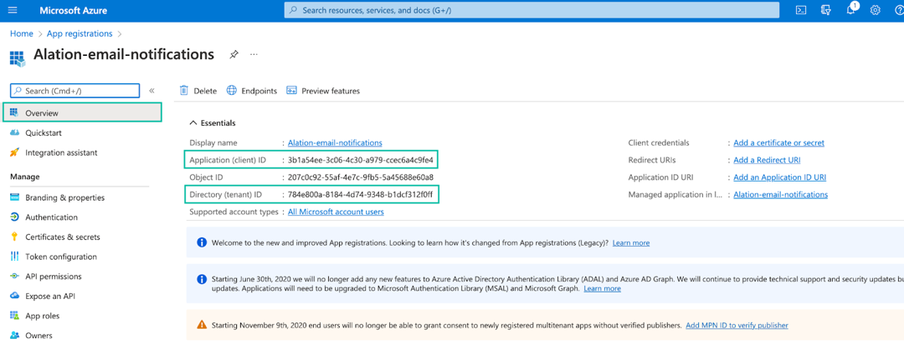
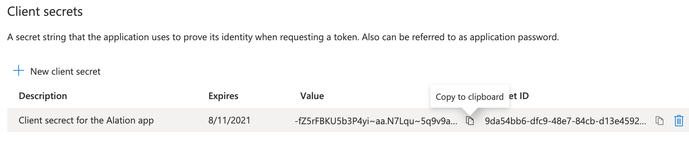
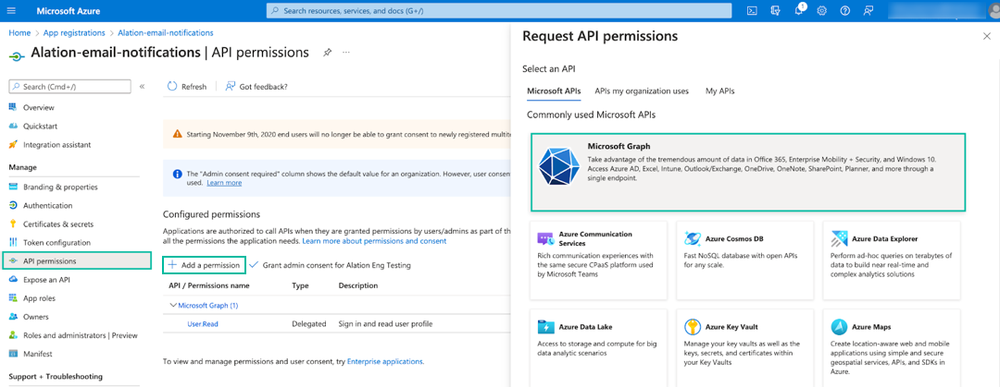
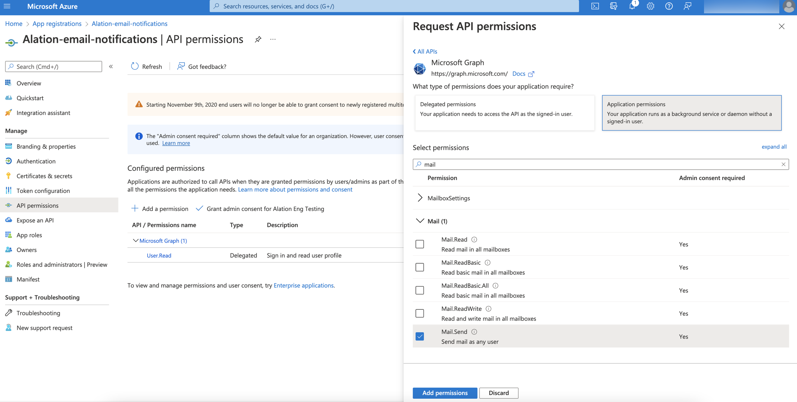
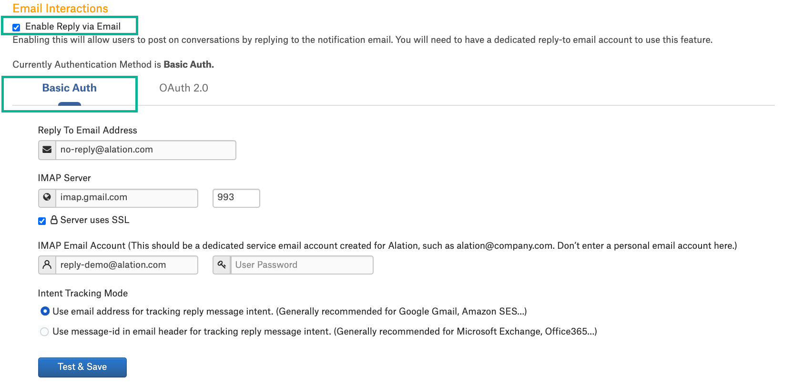
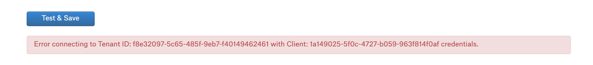
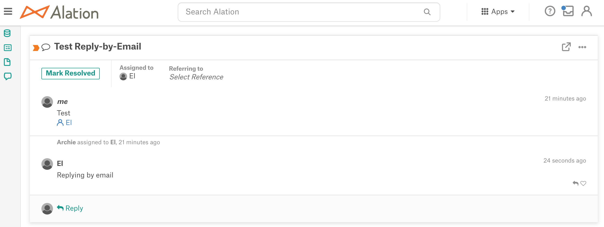

Email Server Configuration¶
Overview¶
Alation uses the email server to send notifications to users and to update conversations from responses in the email. Examples of email notifications that Alation sends out include:
notifications about the events users subscribe to on their User Profile page
notifications about the completion of a data export sent to users performing exports
notifications about the success or failure of scheduled queries sent to query owners
notifications about the system health and the status of scheduled jobs sent to all Server Admins.
The email server settings are available on the Email Server tab of the Admin Settings page. The email server configuration requires the Server Admin role.
Alation recommends setting up the email server during the initial configuration of the Alation Catalog. However, changes to the email server configuration are allowed and can be applied when needed.
The email server can be configured in a number of ways:
Setting Up Built-in SMTP Server (basic authentication with username and password)
Setting Up Corporate SMTP Server (basic authentication with username and password)
Note
See Email Server Configuration Prerequisites for information about the network configuration used by the email server.
Configuring Email Notifications with MS Modern Authentication (available from release 2022.1)
Microsoft modern authentication with the email server is available for Microsoft email service accounts, such as Exchange, Outlook online, or Office 365. Alation uses MS Graph APIs to access mailboxes and the OAuth 2.0 client credentials flow to authenticate with Microsoft as the email service provider. You can refer to Microsoft documentation for more details about this authentication flow, for example: Microsoft identity platform and the OAuth 2.0 client credentials flow.
After configuring the email server, an admin can configure Email Interactions (Reply By Email) to enable users to post to conversations directly in the email. Email interactions can be configured using:
An IMAP server: Email Interactions With Basic Authentication
Microsoft modern authentication: Email Interactions With MS Modern Authentication (available from release 2021.2).
Setting Up Built-in SMTP Server¶
To set up the built-in SMTP server:
Sign in to Alation as a Server Admin.
In the upper-right corner, click the Settings icon. The Admin Settings page will open.
Click the Email Server link to open the email server settings page.
Under Email Notifications > Basic Auth, select the Use Built-in Alation SMTP Server checkbox.
Note
In releases prior to 2022.1, the Basic Auth tab is not present. The Use Built-in Alation SMTP Server checkbox is under the Email Notifications section.
Click Test and Save to send a test email and save the input information. A successful test means the built-in email server is set up. If it fails, troubleshoot the configuration.
Troubleshooting Built-in Email Server Configuration¶
The actions described in this section require SSH access to the Alation server.
After pressing Test and Save in Admin Settings > Email you may receive a connection or a timeout error. If that is the case, check if Postfix is up and running inside the Alation shell:
sudo /etc/init.d/alation shell sudo service postfix startIf the connection test is successful but there is no test email in your inbox, review the logs in the /var/log/maillog directory on the Alation server (outside of the Alation shell) to identify the problem.
Run the following command from the Alation shell to debug email delivery, replacing the placeholder email address <replace_email@company.com> with a working email address:
sudo /etc/init.d/alation shell echo 'Test e-mail' | sendmail -f noreply@alation.com <replace_email@company.com>If this action succeeds, on the Email tab, specify a real working email address as the Sender address instead of the default one and test again.
Setting up Connection to a Relay Server¶
It is possible to use the built-in SMTP Server in combination with a relay server running outside of the Alation chroot. This option may help avoid potential email blocking by the company’s receiving server when the built-in SMTP server is used.
To connect the built-in SMTP server to a relay server outside of the Alation chroot:
Edit the main configuration file of your SMTP service (for example, Sendmail or Postfix) on the host server to have the
relayhostvariable point to the hostname or IP address of your new relay server.Note
If the SMTP server is Postfix, edit the Postfix configuration file on the OS of the Alation host server: /etc/postfix/main.cnf.
Restart the SMTP service.
After changing the configuration file, sign in to Alation and go to Admin Settings > Email Server.
Select the Use Built-in Alation SMTP Server checkbox.
Click Test and Save to send a test email and save the input information.
Setting Up Corporate SMTP Server¶
To configure the use of a corporate email server:
On the corporate SMTP server, create a dedicated email account for Alation with the send privileges. This account will be used in email server configuration on the Alation side.
Sign in to Alation as a Server Admin.
Click the Settings icon on the upper right of the main toolbar. The Admin Settings page will open.
Click the Email Server link to go to the email server configuration settings.
Under Email Notifications > Basic Auth, clear the Use Built-in Alation SMTP Server checkbox.
Note
In releases prior to 2022.1, the Basic Auth tab is not present. The Use Built-in Alation SMTP Server checkbox is under the Email Notifications section.
Enter your corporate SMTP server information:
Parameter
Description
SMTP Server
SMTP Server: specify the SMTP server hostname
TCP port field: specify the TCP port
Use TLS: enable this setting if TLS is used by the server
SMTP Email Account
Alation should have a dedicated email account with send privileges on this SMTP server. Provide the following account information:
User ID: specify the login of the SMTP email account
Password: provide the password for this account.
SMTP Timeout
Specify time in seconds that the system should wait before it stops trying to connect to the SMTP server.
From Email
Specify the email address to be used to fill the From field in email notifications, for example, noreply@alation.com. Alation recommends using a real email address.
From Email Display Name
Provide a name for the From email address. This name will be displayed as the name of the sender, for example: DataWizard <noreply@alation.com>
Click Test and Save to send a test email to your email address and save the new SMTP information. If you get the success message but do not receive the test email, see the next section. If there is an error sending the test email, follow the instructions in the error message to troubleshoot.
Troubleshooting Email Server Configuration¶
Some of the actions described in this section require SSH access to the Alation server.
If you do not receive the test email, try the following steps:
Check your spam folder. The email may have been sorted as spam.
Review the file alation-debug.log for email server-specific errors. The file is located in the /opt/alation/site/logs directory (inside the Alation shell):
sudo /etc/init.d/alation shell cd /opt/alation/site/logs
Check your corporate email server logs to identify the problem. You may need to whitelist the Alation server IP.
Run the following command on the Alation server to debug email delivery issues. Replace
<replace_email@company.com>with your email address:echo 'Test e-mail' | sendmail -f noreply@alation.com <replace_email@company.com>
Configuring Email Notifications with MS Modern Authentication¶
Available from version 2022.1
Prerequisites¶
Main email account¶
To configure email notifications with Microsoft (MS) modern authentication, set up an MS email account for Alation to authenticate with and use as a mailbox to send emails.
From address¶
You can optionally use a sender’s address (the From address) that is different from the main email account. If you opt for this setup, create or identify an additional email account that Alation can use as the sender’s address and grant this email account the permission to send email on behalf of another user. Use the steps in Send email from another user’s mailbox in Microsoft’s documentation to grant the permissions.
When the From email account is different from the main email account, Alation will use the main email account for authentication and the From email account for sending emails. Use the From address if your configuration preference is to send emails from an address different from the address you use for authentication.
Azure app registration¶
Before performing the configuration on the Alation side, register an application for Alation in your MS Azure portal (see below). This app registration will be authorized to invoke the MS Graph APIs on behalf of Alation. You may need assistance from your Azure portal admin to approve the required API permissions for this application.
Note
If you are planning to use Alation’s Email Interactions (Reply By Email) feature with MS modern authentication, you can use the same app registration for configuring both email notifications and Reply By Email.
Register an App in Azure Portal¶
In Azure portal, create an app registration for Alation. When creating the registration, provide the following values:
Name: specify a meaningful name for your app registration
Supported account types: select a value that is appropriate for your environment
Redirect URL: do not specify.
After registering the app, locate the Application (client) ID and the Directory (tenant) ID values on the Overview tab of the app properties. Store them safely. You’ll need these values for configuration in Alation:
In the left-hand menu under Manage, go to Certificates & secrets.
Under Client secrets, create a new client secret, copy the secret value and store it safely. You will need this value for the configuration in Alation.
Under Manage, select API permissions.
Click Add a permission and select Microsoft Graph API:
Select the Application permissions box and search for Mail.
The permission required for email notifications is Mail.Send. However, if you are going to use the same app registration for Email Interactions (Reply By Email), also add the permissions required to enable email interactions:
Mail.Read
Mail.ReadBasic
Mail.ReadBasicAll
Mail.ReadWrite
After selecting the permissions, click Add permissions.
The permissions will be added to your application. Next, your Azure portal admin needs to grant admin consent for those permissions. After that, you can configure email notifications on the Alation side.
{kind=link}
Note
Refer to the Microsoft documentation for more details on how an application calls the Graph API, for example: Get access without a user.
Configure Email Notifications With MS Modern Authentication in Alation¶
To set up email notifications using MS modern authentication:
Prepare the following information about your Azure app registration:
Application (client) ID - the client ID of the app registration
Directory (tenant) ID - the Active Directory tenant ID for the registered application. You can find the tenant ID on your app registration properties page in Azure portal.
Client ID - the unique identifier of the Azure app registration. You can find the Client ID on your app registration properties page in Azure portal.
Client secret - the client secret value you have generated for your app registration.
Log in to Alation as a Server Admin.
Click the Settings icon on the top right to open the Admin Settings page.
In the Server Admin section of the Admin Settings, click Email Server to open the email server setup page.
In the Email Notifications section, click on the OAuth 2.0 tab:
Specify the following information:
Parameter
Description
Email Address
Email address of the main email account to be used for authentication.
Service Provider
Microsoft is the only supported provider.
Tenant ID
Specify the Directory (tenant) ID of the Azure app registration.
Client ID
Specify the Application (client) ID of the Azure app registration.
Client Secret
Specify the client secret value of the Azure app registration.
From Address
Fill this field if you want to send emails from a different email address. This email address will be exposed to Alation users when they receive emails from Alation.
Note that an additional permission is required on this email address. Refer to From address for more information.
If no value is provided in this field, the main email address from the Email Address field will be used for both authentication and sending emails.
From Address Display Name
This field is disabled when Microsoft is the Service Provider.
Click Test and Save. Alation checks authentication based on the provided email account information. If the connection can be established successfully, Alation will display a success message and send a test email to the email address of your user profile. If the connection cannot be established, Alation will issue an error message. Depending on the message, troubleshoot the configuration.
{kind=link}
Troubleshooting Email Notifications With MS Modern Authentication¶
Test and Save fails when the From Address field is not filled¶
Cause: Invalid email account credentials are passed
Resolution: check if
The client ID and the tenant ID are valid.
The client secret value is valid.
The account specified in the Email Address field is a valid user that has a mailbox.
The Mail.Send API permission has been granted to the Azure app registration used by Alation.
Test and Save fails when the From Address field is filled¶
Cause: Permission to send email on behalf of another user is not granted to the email account in the From Address field
Resolution: Refer to From address.
Configuring Email Interactions¶
Note
Email interactions (Reply By Email) require that the email notifications are set up first (see above).
Users communicate in Alation using conversations. When an Alation user is @-mentioned in a conversation post, they receive an email notification. An admin can enable the ability for users to respond to conversations directly from the email by enabling Email Interactions.
When a user starts a conversation anywhere in Alation and @-mentions other users in the post, the @-mentioned users will receive email notifications with the content of the post. Instead of navigating to Alation to respond, they will be able to send their response to Alation by directly replying to the email notification.
When email interactions are enabled, the email notification about the @-mention in a conversion will include the prompt Please type your reply above this line:
{kind=link}
The response will be posted in the corresponding conversation in Alation.
Configuration capabilities for email interactions depend on the Alation version:
Releases prior to 2021.2
Alation needs a dedicated working email account with IMAP-enabled inbox access that will be used to receive emails. See Email Interactions With Basic Authentication.
Release 2021.2 and newer
It is possible to set up email interactions with Microsoft modern authentication. See Email Interactions With MS Modern Authentication.
Mailbox Synchronization¶
Alation retrieves information from the emails sent to the receiving mailbox every 3 minutes (default). Alation parses the incoming emails and adds the content of the response to the relevant conversations.
When basic authentication is used to configure Reply By Email, Alation archives the incoming emails every Sunday. For archived emails, Alation cleans up emails that are older than 30 days.
When MS modern authentication is used, the incoming emails are not archived.
Email Interactions With Basic Authentication¶
Important
Do not use a personal email account for configuring email interactions. Alation recommends creating a separate service email account for Alation.
To use basic authentication for email interactions:
Sign in to Alation as a Server Admin.
In the upper right-hand corner of the main toolbar, click the Settings icon to open the Admin Settings page.
In the Server Admin section, click Email Server to open the email server setup page.
In the Email Interactions section, select the Enable Reply via Email checkbox. This will make the fields under Email Interactions editable.
Specify the information on the Basic Auth tab.
Note
In releases prior to 2021.2, the Basic Auth tab is not present.
Parameter
Description
Reply To Email Address
Specify the reply-to email address in this field. This address should belong to the dedicated email account with an enabled IMAP inbox access. It will be used by Alation to receive email replies from users.
IMAP Server
IMAP Server provide the IMAP server hostname. Depending on your network configuration, it can be your corporate SMTP server.
IMAP Server port provide the port for inbox access
Server uses SSL select this checkbox if IMAP access should work over SSL for this server
IMAP Email Account
User Name provide the user name of the reply-to email account
Password provide the password of the reply-to user account
Intent Tracking Mode
Select the setting that will work with your IMAP server. For details, see Intent Tracking Mode
Click Save. Alation will establish a test connection with the email server. If it succeeds, the settings will be saved and the feature will be enabled. Users will be able to post to conversations by replying to emails. Alation checks the inbox of the Reply To Email account on a regular basis, and the email replies are posted a few minutes after they were sent.
Intent Tracking Mode¶
Alation needs Intent Tracking Mode to correctly render replies via email and post them to relevant conversations. Intent is a string that Alation appends to the email in order to identify it as a post to a conversation. Alation can encode intent in one of two ways: either in the email address or in the email header. Different email providers have different requirements for including additional strings into the message structure. The admin has to specify this setting depending on the email provider that is in use.
If your IMAP server is Google Gmail or Amazon SES, select Use email address for tracking reply message intent. These email services allow adding strings to the email address.
If your IMAP server is Microsoft Exchange or Office 365, select Use message-id in email header for tracking reply message intent. These email services allow adding strings to the email header.
If your IMAP server is neither Google Gmail or Amazon SES or Microsoft Exchange or Office 365, then save the first option and test by creating a Conversation and replying to it via email. If using the first option results in the recipient not found error for the reply emails, switch to the second option and try again. The option that successfully sends replies works for your server.
Email Interactions With MS Modern Authentication¶
Available from release 2021.2
MS Email Account¶
To configure email interactions with Microsoft (MS) modern authentication, you need a MS email account that Alation can use as a mailbox to send and receive emails. You can either create a separate email account or use the same email account that was already provided to set up email notifications.
Important
Do not use an existing personal email account. For Alation to update conversations correctly, the incoming emails from users replying to conversations in the email should not be marked as read manually by a user.
Alation recommends to set the Mark as Read property of the MS mailbox to Don’t automatically mark items as read.
MS Azure App Registration¶
You can either use the Azure app registration you already created for email notifications or create a separate app registration for email interactions. If you chose to use one app registration for both, note that it should accommodate for both configurations. The email interactions require more MS Graph API permissions than email notifications. Make sure that your existing app registration was granted the following API permissions:
Mail.Read
Mail.ReadBasic
Mail.ReadBasicAll
Mail.ReadWrite
Mail.Send (this permission is required by both email notifications and email interactions).
If you choose to create a separate app registration for email interactions, use the steps in Register an App in Azure Portal to create it. The only difference is in the number of API permissions that need to be granted to the app. Make sure to grant these permissions:
Mail.Read
Mail.ReadBasic
Mail.ReadBasicAll
Mail.ReadWrite
Mail.Send (this permission is required by both email notifications and email interactions).
After creating the app registration and granting it the required permissions, you can configure email interactions in Alation.
Configure Email Interactions With MS Modern Authentication in Alation¶
When your Azure admin has granted admin consent for the API permissions, you can configure email interactions with MS Modern Authentication in Alation:
Prepare the following information about your Azure app registration:
Application (client) ID - the client ID of the app registration. You can find the client ID on your app registration properties page in Azure portal.
Directory (tenant) ID - the Active Directory tenant ID for the registered application. You can find the tenant ID on your app registration properties page in Azure portal.
Client secret - the client secret value you have generated for your app registration.
Log in to Alation as a Server Admin.
Click the Settings icon on top right to open the Admin Settings page.
In the Server Admin section of the Settings, click Email Server to open the email server setup page.
In the Email Interactions section, select the Enable Reply via Email checkbox. This will make the fields under Email Interactions editable. To use MS Modern Authentication, fill out the information on the OAuth 2.0 tab:
Fill in the following information:
Parameter
Description
Reply To Email Address
Specify the reply-to email address. This address should belong to the dedicated email account that will be used by Alation to receive inbound email replies from users.
Service Provider
Microsoft (non-editable)
Tenant ID
Specify the tenant ID of the application you registered in the Azure portal.
Client ID
Specify the client ID of the application you registered in the Azure portal.
Client Secret
Specify the client secret of the application you registered in the Azure portal.
Intent Tracking Mode
MS email services allow message-id in the email header. The Use message-id in email header option is preselected and non-editable when Microsoft is the Service Provider.
{kind=link}
Click Test and Save. Alation checks authentication based on the provided credentials. If the connection cannot be established, it will issue an error message:

Troubleshooting The Configuration¶
Error |
Solution |
|---|---|
Error connecting to Tenant ID: <tenant-id> with Client: <client-id> credentials. |
Microsoft OAuth2 settings Tenant ID, Client ID or Client Secret are invalid. Verify the OAuth2 settings you have specified in the Alation UI and make sure they are the correct values from your Azure portal. |
Testing The Configuration¶
To test the configuration:
Create a conversation in Alation and @-mention an Alation user in the post.
Check email on behalf of the mentioned user. This user should receive an email notification from Alation (<Username> mentioned you in <Conversation name>) with the ability to reply by email. There will be the prompt Please type the reply above this line in the notification.
Reply to the email:
In about 3 minutes, check this conversation in Alation. The response should have been appended to the body of the conversation:

Troubleshooting Reply By Email¶
Error |
Solution |
|---|---|
Email messages are sent from the replying user to the receiving MS mailbox but are not added as conversation updates in Alation. |
Mailbox configured as the receiving address in the settings is either manually read or read by another application. Email messages should stay unread to be processed.
|
A user has replied to an email notification but there is no incoming email and the Conversation is not updated. |
Check that the user replies to the right notification. Users should reply to notifications that explicitly @-mention them and include the prompt Please type your reply above this line (<Username> mentioned you in <Conversation name>). Note that when a Conversation is assigned to a user, this user also receives an email notification that informs them about the assignment (<Username> assigned you to this Conversation). However, they cannot reply to this email. |